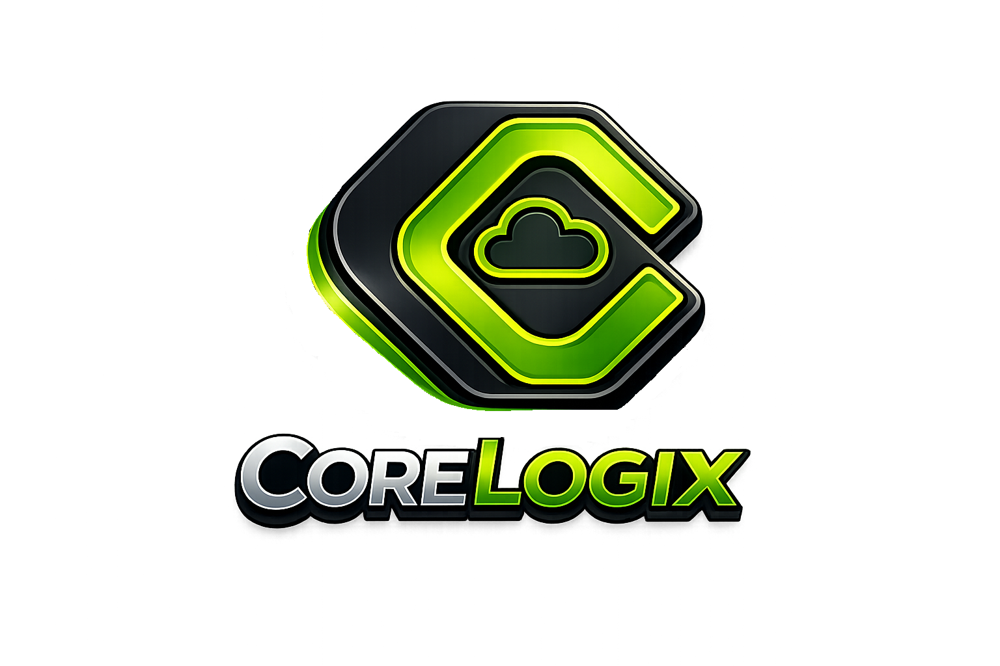

Build and operate applications with clear control.
CoreLogiX is our governed platform approach for creating and managing business applications. It is distinct from CoreCloud’s broader advisory and partner coordination work.
Build and manage business applications with clear ownership, control and accountability.

Where the platform fits
CoreCloud determines the business need and coordinates the delivery approach. CoreLogiX provides a governed application platform option when a bespoke product outcome is justified.
CoreCloud remains workload-first and vendor-neutral. Existing SaaS, public cloud, private cloud, infrastructure or partner technology may still be the right answer. CoreLogiX becomes relevant when the business outcome requires sovereign application capability with controlled deployment and lifecycle governance.
A controlled journey from evidence to operation.
The public model is deliberately simple: validate the requirement, create the product, resolve the right venue, implement it and govern its lifecycle.
Designed for enterprise sovereignty without infrastructure lock-in.
The same governed product can be realised in different approved venues without rebuilding its business logic for each provider.
Evidence-led
Product requirements are grounded in validated business and technical evidence rather than assumptions.
Venue-neutral
Deployment can align to public cloud, private cloud, hosted infrastructure, customer-owned environments, on-premises or hybrid requirements.
Governed composition
Product composition, release identity and compatibility are controlled before deployment.
Controlled implementation
Implementation follows defined deployment, migration, integration, preflight and evidence requirements.
Sovereign activation
Provisioned, certified, entitled, authorised, activated and healthy are treated as distinct lifecycle states.
Lifecycle control
Updates and rollback remain governed against known release and deployment posture.
Built against real enterprise requirements.
CoreLogiX has progressed beyond conceptual architecture and is being applied to a commercial enterprise product, providing a real-world reference path for governed product creation and deployment.
Client identity, implementation detail and validation evidence remain confidential unless explicitly authorised for public disclosure. CoreCloud's public position is therefore capability-led rather than customer-name-led.
Start with the outcome, not the platform.
A Sovereign Platform conversation begins by determining whether the requirement genuinely warrants a governed product path.
Business requirement
What capability must exist, and what measurable outcome must it produce?
Sovereignty & venue
What control, residency, security, resilience and deployment constraints apply?
Implementation readiness
What integrations, migrations, operating ownership and acceptance evidence are required?